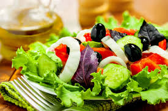

VEGETABLE SALAD



BENEFITS
Salad contain Vitamin A, Vitamin C, beta-carotene, calcium, folate, fiber, and phytonutrients. Leafy vegetables are a good choice for a healthful diet because they do not contain cholesterol and are naturally low in calories and sodium.
STEPS TO PREPARE SALAD
- Bring a large pot of water to a boil.
- In a bowl, whisk together all ingredients except oil, salt and pepper.
- Whisking constantly, slowly drizzle in oil. Season with salt and pepper.
- Add carrots, broccoli and cauliflower to boiling water and cook until just tender, about 4 minutes.
- Drain and rinse under cold water.
- In a large salad bowl, toss cooked vegetables, bell pepper, onion and cherry tomatoes with dressing.
- Cover and chill for at least 30 minutes.
- Toss again just before serving.